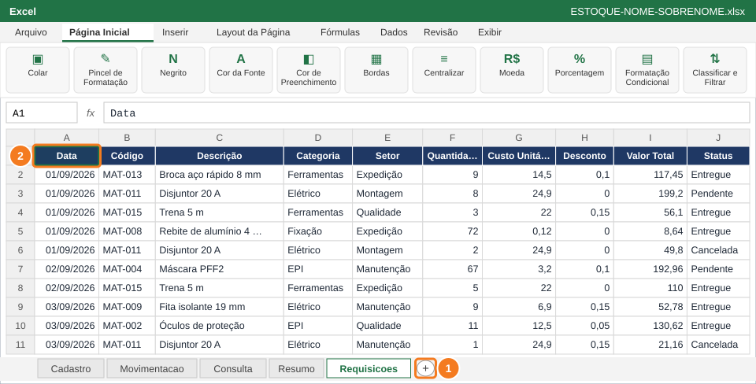

1
Crie a aba Requisicoes e cole os 120 registros

- Clique no + ao lado das abas (1) e renomeie a nova aba para Requisicoes (sem acento).
- Abaixo, clique em 📋 Copiar para copiar a tabela de 120 registros.
- Volte ao Excel, clique em A1 (2) e cole com Ctrl+V.
- Os dados chegam sem formatação: números com vírgula, sem R$ e sem %. Formatar é o seu trabalho nesta questão.
Aba Requisicoes (Questão 7): copie e cole em A1 (120 registros)
Colunas da planilha: A, B, C, D, E, F, G, H, I, J. Ao copiar, cole na célula A1: colunas de fórmula ficam em branco.
| Data | Código | Descrição | Categoria | Setor | Quantidade | Custo Unitário | Desconto | Valor Total | Status |
|---|---|---|---|---|---|---|---|---|---|
| 01/09/2026 | MAT-013 | Broca aço rápido 8 mm | Ferramentas | Expedição | 9 | 14,5 | 0,1 | 117,45 | Entregue |
| 01/09/2026 | MAT-011 | Disjuntor 20 A | Elétrico | Montagem | 8 | 24,9 | 0 | 199,2 | Pendente |
| 01/09/2026 | MAT-015 | Trena 5 m | Ferramentas | Qualidade | 3 | 22 | 0,15 | 56,1 | Entregue |
| 01/09/2026 | MAT-008 | Rebite de alumínio 4 mm | Fixação | Expedição | 72 | 0,12 | 0 | 8,64 | Entregue |
| 01/09/2026 | MAT-011 | Disjuntor 20 A | Elétrico | Montagem | 2 | 24,9 | 0 | 49,8 | Cancelada |
| 02/09/2026 | MAT-004 | Máscara PFF2 | EPI | Manutenção | 67 | 3,2 | 0,1 | 192,96 | Pendente |
| 02/09/2026 | MAT-015 | Trena 5 m | Ferramentas | Expedição | 5 | 22 | 0 | 110 | Entregue |
| 03/09/2026 | MAT-009 | Fita isolante 19 mm | Elétrico | Manutenção | 9 | 6,9 | 0,15 | 52,78 | Entregue |
| 03/09/2026 | MAT-002 | Óculos de proteção | EPI | Qualidade | 11 | 12,5 | 0,05 | 130,62 | Entregue |
| 03/09/2026 | MAT-011 | Disjuntor 20 A | Elétrico | Manutenção | 1 | 24,9 | 0,15 | 21,16 | Cancelada |
| 03/09/2026 | MAT-006 | Porca M8 | Fixação | Expedição | 119 | 0,15 | 0,1 | 16,06 | Entregue |
| 04/09/2026 | MAT-009 | Fita isolante 19 mm | Elétrico | Manutenção | 18 | 6,9 | 0 | 124,2 | Entregue |
| 04/09/2026 | MAT-005 | Parafuso sextavado M8 | Fixação | Manutenção | 119 | 0,45 | 0 | 53,55 | Entregue |
| 04/09/2026 | MAT-013 | Broca aço rápido 8 mm | Ferramentas | Montagem | 9 | 14,5 | 0,15 | 110,92 | Cancelada |
| 04/09/2026 | MAT-007 | Arruela lisa 8 mm | Fixação | Qualidade | 150 | 0,08 | 0,05 | 11,4 | Pendente |
| 04/09/2026 | MAT-007 | Arruela lisa 8 mm | Fixação | Expedição | 87 | 0,08 | 0 | 6,96 | Cancelada |
| 04/09/2026 | MAT-001 | Luva de vaqueta | EPI | Montagem | 6 | 18,9 | 0,15 | 96,39 | Entregue |
| 04/09/2026 | MAT-001 | Luva de vaqueta | EPI | Montagem | 33 | 18,9 | 0,05 | 592,51 | Entregue |
| 05/09/2026 | MAT-006 | Porca M8 | Fixação | Expedição | 342 | 0,15 | 0 | 51,3 | Entregue |
| 05/09/2026 | MAT-010 | Cabo flexível 2,5 mm² | Elétrico | Qualidade | 38 | 3,4 | 0,15 | 109,82 | Entregue |
| 05/09/2026 | MAT-004 | Máscara PFF2 | EPI | Expedição | 39 | 3,2 | 0,05 | 118,56 | Entregue |
| 05/09/2026 | MAT-011 | Disjuntor 20 A | Elétrico | Expedição | 1 | 24,9 | 0,1 | 22,41 | Entregue |
| 09/09/2026 | MAT-004 | Máscara PFF2 | EPI | Produção | 79 | 3,2 | 0,1 | 227,52 | Cancelada |
| 09/09/2026 | MAT-015 | Trena 5 m | Ferramentas | Manutenção | 4 | 22 | 0,15 | 74,8 | Entregue |
| 09/09/2026 | MAT-012 | Disco de corte 7" | Ferramentas | Manutenção | 23 | 9,8 | 0,1 | 202,86 | Pendente |
| 10/09/2026 | MAT-009 | Fita isolante 19 mm | Elétrico | Qualidade | 6 | 6,9 | 0 | 41,4 | Pendente |
| 10/09/2026 | MAT-003 | Protetor auricular plug | EPI | Expedição | 54 | 1,8 | 0,1 | 87,48 | Pendente |
| 10/09/2026 | MAT-007 | Arruela lisa 8 mm | Fixação | Produção | 246 | 0,08 | 0,05 | 18,7 | Entregue |
| 10/09/2026 | MAT-005 | Parafuso sextavado M8 | Fixação | Montagem | 287 | 0,45 | 0 | 129,15 | Entregue |
| 11/09/2026 | MAT-008 | Rebite de alumínio 4 mm | Fixação | Montagem | 279 | 0,12 | 0,15 | 28,46 | Pendente |
| 11/09/2026 | MAT-003 | Protetor auricular plug | EPI | Expedição | 35 | 1,8 | 0 | 63 | Entregue |
| 11/09/2026 | MAT-009 | Fita isolante 19 mm | Elétrico | Montagem | 5 | 6,9 | 0,15 | 29,32 | Entregue |
| 11/09/2026 | MAT-014 | Lixa grão 120 | Ferramentas | Produção | 39 | 1,9 | 0 | 74,1 | Entregue |
| 11/09/2026 | MAT-011 | Disjuntor 20 A | Elétrico | Manutenção | 1 | 24,9 | 0 | 24,9 | Entregue |
| 12/09/2026 | MAT-006 | Porca M8 | Fixação | Qualidade | 343 | 0,15 | 0,15 | 43,73 | Entregue |
| 12/09/2026 | MAT-013 | Broca aço rápido 8 mm | Ferramentas | Qualidade | 12 | 14,5 | 0,05 | 165,3 | Entregue |
| 12/09/2026 | MAT-005 | Parafuso sextavado M8 | Fixação | Manutenção | 341 | 0,45 | 0,05 | 145,78 | Pendente |
| 12/09/2026 | MAT-005 | Parafuso sextavado M8 | Fixação | Qualidade | 117 | 0,45 | 0,05 | 50,02 | Entregue |
| 12/09/2026 | MAT-002 | Óculos de proteção | EPI | Expedição | 8 | 12,5 | 0,15 | 85 | Entregue |
| 12/09/2026 | MAT-002 | Óculos de proteção | EPI | Montagem | 8 | 12,5 | 0,1 | 90 | Entregue |
| 15/09/2026 | MAT-011 | Disjuntor 20 A | Elétrico | Montagem | 5 | 24,9 | 0,1 | 112,05 | Entregue |
| 15/09/2026 | MAT-010 | Cabo flexível 2,5 mm² | Elétrico | Montagem | 15 | 3,4 | 0,15 | 43,35 | Entregue |
| 15/09/2026 | MAT-005 | Parafuso sextavado M8 | Fixação | Expedição | 181 | 0,45 | 0 | 81,45 | Entregue |
| 16/09/2026 | MAT-007 | Arruela lisa 8 mm | Fixação | Manutenção | 61 | 0,08 | 0 | 4,88 | Entregue |
| 16/09/2026 | MAT-005 | Parafuso sextavado M8 | Fixação | Qualidade | 345 | 0,45 | 0 | 155,25 | Entregue |
| 16/09/2026 | MAT-015 | Trena 5 m | Ferramentas | Expedição | 5 | 22 | 0,15 | 93,5 | Entregue |
| 16/09/2026 | MAT-011 | Disjuntor 20 A | Elétrico | Produção | 7 | 24,9 | 0,1 | 156,87 | Pendente |
| 16/09/2026 | MAT-006 | Porca M8 | Fixação | Expedição | 268 | 0,15 | 0,05 | 38,19 | Entregue |
| 17/09/2026 | MAT-011 | Disjuntor 20 A | Elétrico | Qualidade | 5 | 24,9 | 0 | 124,5 | Entregue |
| 17/09/2026 | MAT-007 | Arruela lisa 8 mm | Fixação | Montagem | 79 | 0,08 | 0 | 6,32 | Cancelada |
| 17/09/2026 | MAT-012 | Disco de corte 7" | Ferramentas | Produção | 12 | 9,8 | 0,1 | 105,84 | Entregue |
| 17/09/2026 | MAT-012 | Disco de corte 7" | Ferramentas | Produção | 12 | 9,8 | 0 | 117,6 | Entregue |
| 17/09/2026 | MAT-013 | Broca aço rápido 8 mm | Ferramentas | Produção | 9 | 14,5 | 0,05 | 123,97 | Entregue |
| 17/09/2026 | MAT-006 | Porca M8 | Fixação | Produção | 133 | 0,15 | 0 | 19,95 | Entregue |
| 18/09/2026 | MAT-010 | Cabo flexível 2,5 mm² | Elétrico | Manutenção | 38 | 3,4 | 0 | 129,2 | Entregue |
| 18/09/2026 | MAT-006 | Porca M8 | Fixação | Montagem | 64 | 0,15 | 0,05 | 9,12 | Entregue |
| 18/09/2026 | MAT-007 | Arruela lisa 8 mm | Fixação | Expedição | 246 | 0,08 | 0,05 | 18,7 | Entregue |
| 18/09/2026 | MAT-007 | Arruela lisa 8 mm | Fixação | Manutenção | 114 | 0,08 | 0 | 9,12 | Pendente |
| 18/09/2026 | MAT-003 | Protetor auricular plug | EPI | Qualidade | 107 | 1,8 | 0,05 | 182,97 | Entregue |
| 18/09/2026 | MAT-009 | Fita isolante 19 mm | Elétrico | Manutenção | 9 | 6,9 | 0,05 | 58,99 | Pendente |
| 19/09/2026 | MAT-001 | Luva de vaqueta | EPI | Expedição | 31 | 18,9 | 0 | 585,9 | Entregue |
| 19/09/2026 | MAT-005 | Parafuso sextavado M8 | Fixação | Qualidade | 95 | 0,45 | 0 | 42,75 | Entregue |
| 19/09/2026 | MAT-014 | Lixa grão 120 | Ferramentas | Qualidade | 26 | 1,9 | 0 | 49,4 | Entregue |
| 19/09/2026 | MAT-006 | Porca M8 | Fixação | Montagem | 78 | 0,15 | 0,1 | 10,53 | Entregue |
| 19/09/2026 | MAT-011 | Disjuntor 20 A | Elétrico | Manutenção | 8 | 24,9 | 0,15 | 169,32 | Entregue |
| 19/09/2026 | MAT-001 | Luva de vaqueta | EPI | Manutenção | 30 | 18,9 | 0 | 567 | Entregue |
| 19/09/2026 | MAT-012 | Disco de corte 7" | Ferramentas | Manutenção | 20 | 9,8 | 0 | 196 | Cancelada |
| 22/09/2026 | MAT-014 | Lixa grão 120 | Ferramentas | Manutenção | 33 | 1,9 | 0 | 62,7 | Entregue |
| 22/09/2026 | MAT-006 | Porca M8 | Fixação | Qualidade | 292 | 0,15 | 0,05 | 41,61 | Entregue |
| 22/09/2026 | MAT-015 | Trena 5 m | Ferramentas | Montagem | 2 | 22 | 0,15 | 37,4 | Entregue |
| 22/09/2026 | MAT-003 | Protetor auricular plug | EPI | Expedição | 20 | 1,8 | 0,1 | 32,4 | Entregue |
| 22/09/2026 | MAT-006 | Porca M8 | Fixação | Qualidade | 259 | 0,15 | 0,15 | 33,02 | Cancelada |
| 22/09/2026 | MAT-013 | Broca aço rápido 8 mm | Ferramentas | Produção | 5 | 14,5 | 0 | 72,5 | Entregue |
| 22/09/2026 | MAT-006 | Porca M8 | Fixação | Manutenção | 101 | 0,15 | 0,05 | 14,39 | Pendente |
| 22/09/2026 | MAT-015 | Trena 5 m | Ferramentas | Qualidade | 3 | 22 | 0 | 66 | Entregue |
| 22/09/2026 | MAT-010 | Cabo flexível 2,5 mm² | Elétrico | Expedição | 39 | 3,4 | 0 | 132,6 | Cancelada |
| 22/09/2026 | MAT-009 | Fita isolante 19 mm | Elétrico | Manutenção | 18 | 6,9 | 0,15 | 105,57 | Entregue |
| 22/09/2026 | MAT-002 | Óculos de proteção | EPI | Expedição | 13 | 12,5 | 0 | 162,5 | Entregue |
| 23/09/2026 | MAT-009 | Fita isolante 19 mm | Elétrico | Qualidade | 8 | 6,9 | 0 | 55,2 | Entregue |
| 23/09/2026 | MAT-003 | Protetor auricular plug | EPI | Montagem | 65 | 1,8 | 0 | 117 | Entregue |
| 23/09/2026 | MAT-003 | Protetor auricular plug | EPI | Produção | 97 | 1,8 | 0,05 | 165,87 | Entregue |
| 23/09/2026 | MAT-011 | Disjuntor 20 A | Elétrico | Montagem | 9 | 24,9 | 0,05 | 212,89 | Cancelada |
| 23/09/2026 | MAT-003 | Protetor auricular plug | EPI | Manutenção | 60 | 1,8 | 0,1 | 97,2 | Entregue |
| 23/09/2026 | MAT-009 | Fita isolante 19 mm | Elétrico | Produção | 18 | 6,9 | 0 | 124,2 | Entregue |
| 23/09/2026 | MAT-011 | Disjuntor 20 A | Elétrico | Produção | 6 | 24,9 | 0,1 | 134,46 | Entregue |
| 23/09/2026 | MAT-002 | Óculos de proteção | EPI | Qualidade | 7 | 12,5 | 0 | 87,5 | Entregue |
| 23/09/2026 | MAT-010 | Cabo flexível 2,5 mm² | Elétrico | Produção | 25 | 3,4 | 0,05 | 80,75 | Entregue |
| 23/09/2026 | MAT-008 | Rebite de alumínio 4 mm | Fixação | Produção | 235 | 0,12 | 0 | 28,2 | Pendente |
| 23/09/2026 | MAT-005 | Parafuso sextavado M8 | Fixação | Produção | 228 | 0,45 | 0,05 | 97,47 | Entregue |
| 24/09/2026 | MAT-008 | Rebite de alumínio 4 mm | Fixação | Qualidade | 166 | 0,12 | 0,05 | 18,92 | Entregue |
| 24/09/2026 | MAT-014 | Lixa grão 120 | Ferramentas | Expedição | 47 | 1,9 | 0 | 89,3 | Entregue |
| 24/09/2026 | MAT-006 | Porca M8 | Fixação | Produção | 303 | 0,15 | 0 | 45,45 | Entregue |
| 24/09/2026 | MAT-013 | Broca aço rápido 8 mm | Ferramentas | Manutenção | 3 | 14,5 | 0 | 43,5 | Entregue |
| 24/09/2026 | MAT-006 | Porca M8 | Fixação | Montagem | 215 | 0,15 | 0,05 | 30,64 | Entregue |
| 24/09/2026 | MAT-015 | Trena 5 m | Ferramentas | Expedição | 4 | 22 | 0,1 | 79,2 | Entregue |
| 24/09/2026 | MAT-006 | Porca M8 | Fixação | Expedição | 162 | 0,15 | 0 | 24,3 | Entregue |
| 24/09/2026 | MAT-014 | Lixa grão 120 | Ferramentas | Montagem | 36 | 1,9 | 0,1 | 61,56 | Cancelada |
| 25/09/2026 | MAT-014 | Lixa grão 120 | Ferramentas | Manutenção | 19 | 1,9 | 0,15 | 30,68 | Entregue |
| 25/09/2026 | MAT-008 | Rebite de alumínio 4 mm | Fixação | Manutenção | 260 | 0,12 | 0,1 | 28,08 | Entregue |
| 25/09/2026 | MAT-005 | Parafuso sextavado M8 | Fixação | Montagem | 186 | 0,45 | 0 | 83,7 | Pendente |
| 25/09/2026 | MAT-014 | Lixa grão 120 | Ferramentas | Manutenção | 44 | 1,9 | 0,15 | 71,06 | Entregue |
| 25/09/2026 | MAT-011 | Disjuntor 20 A | Elétrico | Manutenção | 9 | 24,9 | 0 | 224,1 | Entregue |
| 25/09/2026 | MAT-013 | Broca aço rápido 8 mm | Ferramentas | Qualidade | 8 | 14,5 | 0 | 116 | Entregue |
| 26/09/2026 | MAT-011 | Disjuntor 20 A | Elétrico | Qualidade | 6 | 24,9 | 0,05 | 141,93 | Entregue |
| 26/09/2026 | MAT-011 | Disjuntor 20 A | Elétrico | Expedição | 9 | 24,9 | 0,05 | 212,89 | Entregue |
| 26/09/2026 | MAT-009 | Fita isolante 19 mm | Elétrico | Montagem | 3 | 6,9 | 0 | 20,7 | Entregue |
| 26/09/2026 | MAT-015 | Trena 5 m | Ferramentas | Produção | 3 | 22 | 0,05 | 62,7 | Pendente |
| 26/09/2026 | MAT-009 | Fita isolante 19 mm | Elétrico | Montagem | 20 | 6,9 | 0,1 | 124,2 | Entregue |
| 26/09/2026 | MAT-011 | Disjuntor 20 A | Elétrico | Expedição | 8 | 24,9 | 0,05 | 189,24 | Entregue |
| 29/09/2026 | MAT-006 | Porca M8 | Fixação | Manutenção | 375 | 0,15 | 0 | 56,25 | Entregue |
| 29/09/2026 | MAT-002 | Óculos de proteção | EPI | Montagem | 13 | 12,5 | 0,1 | 146,25 | Pendente |
| 29/09/2026 | MAT-001 | Luva de vaqueta | EPI | Expedição | 37 | 18,9 | 0,15 | 594,4 | Entregue |
| 29/09/2026 | MAT-005 | Parafuso sextavado M8 | Fixação | Produção | 334 | 0,45 | 0,05 | 142,78 | Entregue |
| 29/09/2026 | MAT-012 | Disco de corte 7" | Ferramentas | Produção | 6 | 9,8 | 0 | 58,8 | Entregue |
| 29/09/2026 | MAT-003 | Protetor auricular plug | EPI | Expedição | 46 | 1,8 | 0 | 82,8 | Cancelada |
| 30/09/2026 | MAT-010 | Cabo flexível 2,5 mm² | Elétrico | Montagem | 10 | 3,4 | 0,1 | 30,6 | Entregue |
| 30/09/2026 | MAT-010 | Cabo flexível 2,5 mm² | Elétrico | Qualidade | 40 | 3,4 | 0,05 | 129,2 | Pendente |
| 30/09/2026 | MAT-003 | Protetor auricular plug | EPI | Expedição | 25 | 1,8 | 0 | 45 | Entregue |
| 30/09/2026 | MAT-003 | Protetor auricular plug | EPI | Manutenção | 80 | 1,8 | 0,05 | 136,8 | Pendente |
| 30/09/2026 | MAT-011 | Disjuntor 20 A | Elétrico | Montagem | 6 | 24,9 | 0,1 | 134,46 | Entregue |
⚠️ AtençãoOs dados são fornecidos: você não será avaliado pela digitação, só pela formatação feita nas Questões 7 a 10.
✅ VerifiqueA tabela vai da linha 1 (títulos) até a linha 121, e as colunas A a J estão preenchidas. Confira com Ctrl+Fim.
🐧 No LibreOffice CalcAo colar, o Calc abre a Importação de Texto: marque Tabulação como separador e confirme.